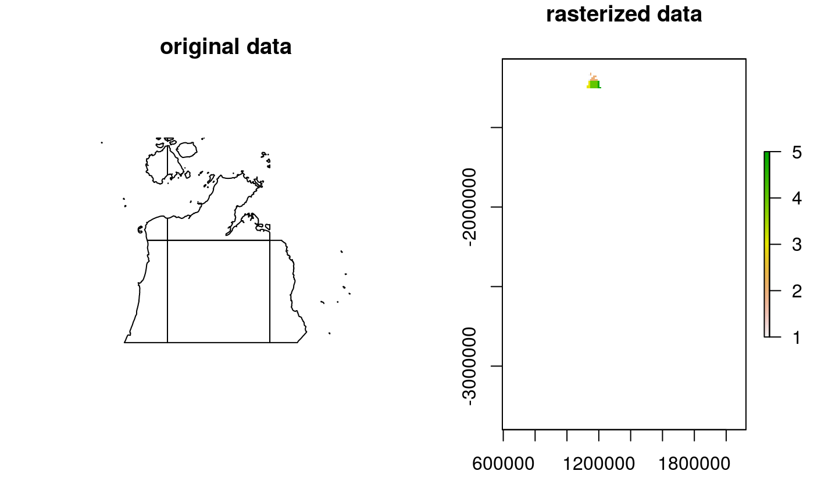

This function converts a SpatialPolygonsDataFrame to a
RasterLayer using GDAL. It is expected to be faster than
rasterize for large datasets. However, it will be
significantly slower for small datasets because the data will need to be
written and read from disk.
rasterizeGDAL(x, y, field = NULL)
| x |
|
|---|---|
| y |
|
| field |
|
RasterLayer object.
# load dat data(cs_pus,cs_spp) # rasterize spatial polygon data x <- rasterizeGDAL(cs_pus[1:5,], cs_spp[[1]]) # plot data par(mfrow = c(1,2)) plot(cs_pus[1:5,], main = "original data") plot(x, main = "rasterized data")